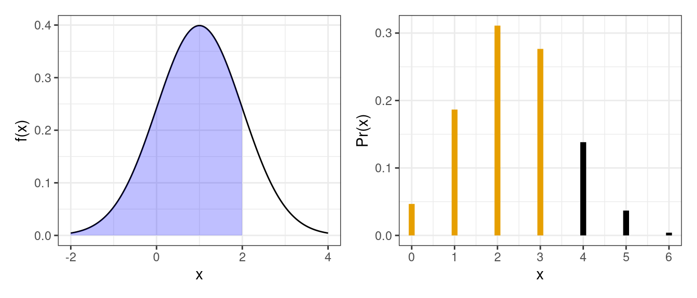

C++ Basics
David Gerard
2022-02-23
Learning Objectives
- Chapters 1–7 and 30 of Rcpp for Everyone
- Chapter 25 of Advanced R
- Learning Objectives:
- Scalars and scalar operations.
- Printing output.
Basic Differences with R
Every line of code needs to end with a semicolon
;.Assignment is with
=, not<-.Every variable needs to be declared ahead of time.
Comments start with
//.Scalars are different from vectors.
Function arguments are called by position, not by name.
Counting begins at 0 (like in python), not 1. This is the most common source of headaches for R programmers migrating to C++.
Order of function definitions matter.
- A function is only available if you have defined it earlier in the file.
- You can declare functions at the top of a file so that you can use them before the function definition.
Hello World
You can print out to the console using Rcpp with
Rcpp::Rcoutand the<<operator.C++
// [[Rcpp::export]] void hello_world_1() { Rcpp::Rcout << "Hello World"; }R
hello_world_1()## Hello WorldThe
voidmeans that our function is not returning anything.You can chain multiple outputs together.
C++
// [[Rcpp::export]] void hello_world_2() { Rcpp::Rcout << "Hello" << " World"; }R
hello_world_2()## Hello WorldIf you want a new line, use
endlfrom thestdnamespace.C++
// [[Rcpp::export]] void hello_world_3() { Rcpp::Rcout << "Hello" << std::endl << "World"; }R
hello_world_3()## Hello ## WorldNotice that we use
::to state the library, just like in R.Notice how putting
<<on different lines did not affect things. This is because the end of the command is wherever the semicolon;is.In non Rcpp C++, you would use
std::coutinstead ofRcpp::Rcout.Since C++ is a compiled language, and you cannot use it interactively, you often debug by printing lots of output to the console and seeing if the output is consistent with what you expect. You will use
Rcpp::Rcouta lot.
Declaration and Scalar Types
Let’s go through a basic example of the differences between R and C++.
C++
// [[Rcpp::export]] double add2(double x, double y) { double z; // declare z to be an double z = x + y; return z; }In the above function, we
- Declare that
add2()will return a double. - Declare that the arguments
xandymust be doubles. - Declare that
zis a double. - Assign
zasxplusy. This uses=. - Return
z.
- Declare that
Notice how there is a semicolon after each line (except where curly braces are concerned).
C++ will error if you forget declarations:
C++
// This will not compile // [[Rcpp::export]] double add2(double x, double y) { z = x + y; return z; }In C++, scalars (elements of length 1) are different from vectors (which contain scalars).
The different basic scalars are
bool: This is eithertrueorfalse(all lower case). Same as a length 1 Rlogical.int: Same as a length 1 Rinteger.double: Same as a length 1 Rdouble.string: Same as a length 1 Rcharacter.
Note that in C++,
1is andintand1.0is a double.Arithmetic operations are similar
+,-,*,/
C++ gives us modify-in-place operators.
x++: Add 1 tox.x--: Subtract 1 fromx.x += a: Addatox.x -= a: Subtractafromx.x *= a: Multiply x bya.x /= a: Dividexbya.
C++
// [[Rcpp::export]] void arith_example() { double x = 1.0; Rcpp::Rcout << "x : " << x << std::endl; x++; Rcpp::Rcout << "x++ : " << x << std::endl; x--; Rcpp::Rcout << "x-- : " << x << std::endl; x += 9; Rcpp::Rcout << "x += 9: " << x << std::endl; x -= 6; Rcpp::Rcout << "x -= 6: " << x << std::endl; x *= 3; Rcpp::Rcout << "x *= 3: " << x << std::endl; x /= 2; Rcpp::Rcout << "x /= 2: " << x << std::endl; }R
arith_example()## x : 1 ## x++ : 2 ## x-- : 1 ## x += 9: 10 ## x -= 6: 4 ## x *= 3: 12 ## x /= 2: 6In C++, you do powers with
pow()from thestdnamespace.C++
// [[Rcpp::export]] double square(double x) { return std::pow(x, 2.0); }R
square(3)## [1] 9Logical operations are the same, but no
&and|&&is and||is or!is not
The comparison between doubles and ints are the same
==,!=,>,<,>=,<=
You can use these in
if-elsestatements, which are exactly the same as R:C++
if (condition) { // code } else if { // code } else if { // code } else { // code }Let’s demonstrate this by creating a C++ version of
sign().C++
// [[Rcpp::export]] int signC(int x) { if (x > 0) { return 1; } else if (x == 0) { return 0; } else { return -1; } }R
signC(-3)## [1] -1signC(0)## [1] 0signC(11)## [1] 1
Assertions
You can throw an R error by using
Rcpp::stop(). This is how you do assertions using Rcpp.C++
// [[Rcpp::export]] void errpos(double x) { if (x > 0.0) { Rcpp::stop("only negative values are allowed"); } }R
errpos(-3) errpos(2)## Error in errpos(2): only negative values are allowed
Useful Math Functions for Scalars
Here are a bunch of the math scalar functions I use pretty regularly.
Most of these are from the
<cmath>library from thestdnamespace, or from the<Rmath>library from theRnamespace.If you want to check out those R header files where the functions are declared, type in R:
R
R.home("include")You can read about the
<cmath>library at https://en.cppreference.comBelow, I will write out the return value and arguments like so
C++
type lib::name(type, type)
<cmath> from std
double std::min(double a, double b): Minimum of two objects (usually scalars) of same type.double std::max(double a, double b): Maximum of two objects (usually scalars) of same type.double std::ceil(double x): Round a double up.double double std::floor(double x): Round a double down.double std::trunc(double x): Round a double closer to zero. So negative numbers up and positive numbers down.double std::round(double x): Rounds double to nearest integer. Returns a double.double std::abs(double x): Absolute value of a double or int.double std::sqrt(double x): Computes \(\sqrt{x}\)double std::exp(double x): Computes \(e^x\).double std::exp2(double x): Computes \(2^x\)double std::pow(double x, double y): Computes \(x^y\).double std::log(double x),double std::log10(double x),double std::log2(double x), logs a double with base \(e\), \(10\), or \(2\) (respectively).double std::lgamma(double arg): Computes natural log of the gamma function. Note thatstd::lgamma(x)is \(\log[(x-1)!]\) for any integer \(x\), so this can be used to calculate log-factorials.
<Rmath> from R
Math Functions
double R::beta(double a, double b): Compute the beta functiondouble R::lbeta(double a, double b): Compute the log of the beta functiondouble R::choose(double n, double k): Compute the combination, \(\binom{n}{k}\)double R::lchoose(double n, double k): Compute the log of the combination, \(\log\left[\binom{n}{k}\right]\).
Distributions
There are many distributions available from
<Rmath>, each is parameterized in standard ways (read about them in Wikipedia).Functions that begin with
dreturn the density (for continuous distributions) or the probability mass (for discrete distributions).
Functions that begin with
preturn the probability for being less than or equal to some value. This is called the cumulative distribution function.
Functions that begin with
qreturn the quantile. That is, you tell me a probability and I will tell you the value such that the probability of being less than that value is the provided probability.Functions that begin with
rprovide random draws from a given distribution.The common arguments between functions are:
xan observation of that distribution.pa probability.lt:lt = 0means thatpis the upper tail probability whilelt = 1means thatpis the lower tail probability.lg:lg = 0means thatpis the probability whilelg = 1means thatlgis the log-probability.
Below are the most common distributions.
Normal Distribution with mean and standard deviation (not variance).
- In Wikipedia:
mu= \(\mu\),sigma= \(\sigma\).
C++
double R::dnorm(double x, double mu, double sigma, int lg) double R::pnorm(double x, double mu, double sigma, int lt, int lg) double R::qnorm(double p, double mu, double sigma, int lt, int lg) double R::rnorm(double mu, double sigma)- In Wikipedia:
Gamma Distribution with shape and scale parameters.
- In Wikipedia:
shp= \(k\),scl= \(\theta\).
C++
double R::dgamma(double x, double shp, double scl, int lg) double R::pgamma(double x, double alp, double scl, int lt, int lg) double R::qgamma(double p, double alp, double scl, int lt, int lg) double R::rgamma(double a, double scl)- In Wikipedia:
Beta Distribution with left and right shape parameters.
- In Wikipedia:
a= \(\alpha\),b= \(\beta\).
C++
double R::dbeta(double x, double a, double b, int lg) double R::pbeta(double x, double p, double q, int lt, int lg) double R::qbeta(double a, double p, double q, int lt, int lg) double R::rbeta(double a, double b)- In Wikipedia:
-
- In Wikipedia:
df= \(k\).
C++
double R::dchisq(double x, double df, int lg) double R::pchisq(double x, double df, int lt, int lg) double R::qchisq(double p, double df, int lt, int lg) double R::rchisq(double df) - In Wikipedia:
\(F\)-distribution with numerator and denominator degrees of freedom.
- In Wikipedia:
df1= \(d_1\),df2= \(d_2\).
C++
double R::df(double x, double df1, double df2, int lg) double R::pf(double x, double df1, double df2, int lt, int lg) double R::qf(double p, double df1, double df2, int lt, int lg) double R::rf(double df1, double df2)- In Wikipedia:
\(t\)-distribution with degrees of freedom.
- In Wikipedia:
n= \(\nu\).
C++
double R::dt(double x, double n, int lg) double R::pt(double x, double n, int lt, int lg) double R::qt(double p, double n, int lt, int lg) double R::rt(double n)- In Wikipedia:
Binomial Distribution with size and success probability parameters.
- In Wikipedia:
n= \(n\),p= \(p\)
C++
double R::dbinom(double x, double n, double p, int lg) double R::pbinom(double x, double n, double p, int lt, int lg) double R::qbinom(double p, double n, double m, int lt, int lg) double R::rbinom(double n, double p)- In Wikipedia:
Exponential Distribution with scale parameter.
- In Wikipedia:
sl= \(1 / \lambda\) (not \(\lambda\)).
C++
double R::dexp(double x, double sl, int lg) double R::pexp(double x, double sl, int lt, int lg) double R::qexp(double p, double sl, int lt, int lg) double R::rexp(double sl)C++
// [[Rcpp::export]] double exp_demo() { return R::dexp(1, 2, 0); }R
exp_demo() ## uses scale## [1] 0.3033dexp(x = 1, rate = 1/2, log = FALSE) ## uses rate## [1] 0.3033- In Wikipedia:
Geometric Distribution with success probability \(p\). This uses the model formulation that counts the number of failures before a success.
- In Wikipedia:
p= \(p\).
C++
double R::dgeom(double x, double p, int lg) double R::pgeom(double x, double p, int lt, int lg) double R::qgeom(double p, double pb, int lt, int lg) double R::rgeom(double p)C++
// [[Rcpp::export]] double g_demo() { return R::dgeom(0, 0.7, 0); }R
g_demo() ## 70% prob of a success on the first trial, so 0 failures.## [1] 0.7- In Wikipedia:
-
- In Wikipedia:
x= \(k\) = Number of white balls drawn.r= \(K\) = number of white balls in urn.b= \(N - K\) = number of black balls in urn.n= \(n\) = number of balls drawn.
C++
double R::dhyper(double x, double r, double b, double n, int lg) double R::phyper(double x, double r, double b, double n, int lt, int lg) double R::qhyper(double p, double r, double b, double n, int lt, int lg) double R::rhyper(double r, double b, double n) - In Wikipedia:
Poisson Distribution with mean parameter.
- In Wikipedia:
lb= \(\lambda\).
C++
double R::dpois(double x, double lb, int lg) double R::ppois(double x, double lb, int lt, int lg) double R::qpois(double p, double lb, int lt, int lg) double R::rpois(double mu)- In Wikipedia:
Exercises
Write a function called
square2()that squares a number, but does not usestd::pow(). Which one is faster?Write a function called
quadform()in C++ that prints the output (usingRcpp::Rcout) of the quadratic formula. That is \[ x = \frac{-b \pm \sqrt{b^2 - 4ac}}{2a} \] It should print two numbers to the console if \(b^2 - 4ac > 0\), one number if \(b^2 - 4ac = 0\), and should print"No Solution"if \(b^2 - 4ac < 0\).R
quadform(1, 2, 1)## Solution: -1quadform(2, 2, 1)## No Solutionquadform(1, 4, 1)## Solution 1: -3.73205 ## Solution 2: -0.267949The beta function is defined in terms of gamma functions as follows \[ \mathrm{B}(x, y) = \frac{\Gamma(x)\Gamma(y)}{\Gamma(x + y)} \]
R has its own version
R
beta(1.5, 2.2)## [1] 0.2341Use just
std::lgamma()andstd::exp()to write your own beta function, calledbeta2(). You should include an argumentlgwhich is a flag for returning either the log-beta or the beta.lgshould default tofalse. E.g.R
beta2(1.5, 2.2)## [1] 0.2341beta2(1.5, 2.2, TRUE)## [1] -1.452Instead of shape and scale, some parameterizations of the gamma distribution use shape and rate (1 over the scale).
stats::dgamma()implements both of these in R, butR::dgamma()in C++ only implements the scale parameterization. Implement a density function for the gamma that uses shape and rate parameterization. E.g.R
dgamma_r(x = 1, shp = 2, rt = 3, lg = 0)## [1] 0.4481dgamma(x = 1, shape = 2, rate = 3, log = FALSE)## [1] 0.4481

This work is licensed under a Creative Commons Attribution-NonCommercial 4.0 International License.